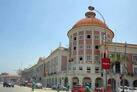
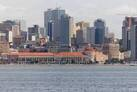
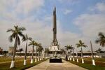
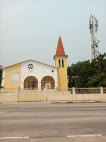
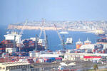
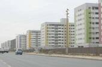
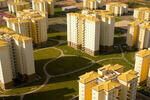
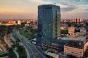

Multimédia
Nesta página encontra conteúdos multimédia
Fotografias








Vídeo
Poesia
Luanda desperta com luz dourada.
O mar abraça a cidade em silêncio.
As ruas respiram histórias antigas.
E o povo caminha com esperança.